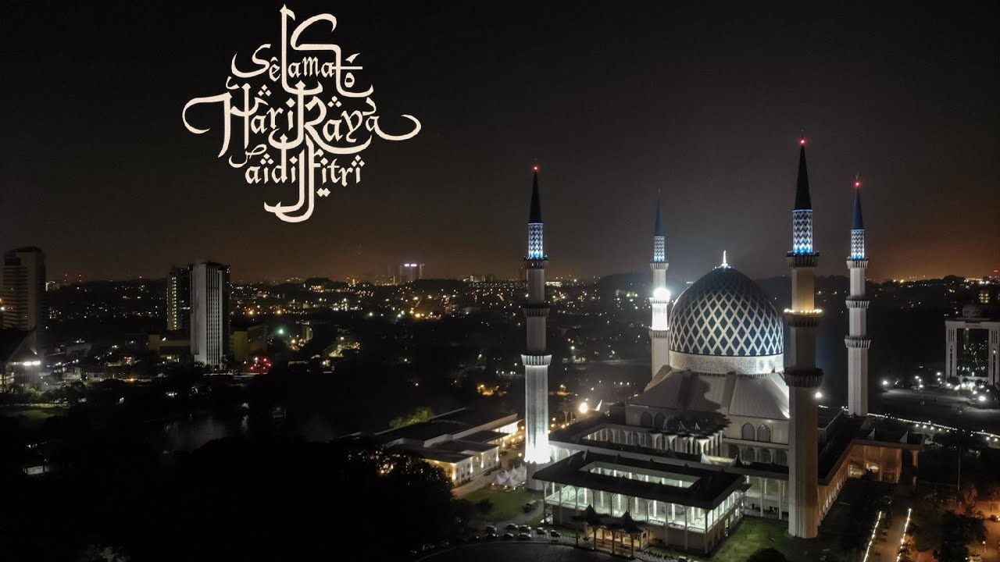
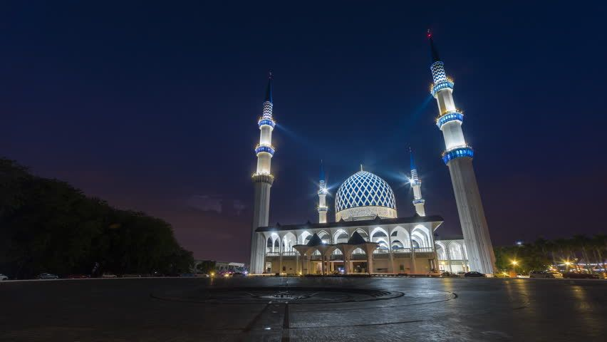

La mosquée Sultan Salahuddin Abdul Aziz, en malaisien Masjid Sultan Salahuddin Abdul Aziz Shah, est une mosquée située à Shah Alam dans l'état du Selangor en Malaisie. Environ 24 000 personnes peuvent s'y rassembler, soit la deuxième plus grande capacité pour une mosquée en Asie du Sud-Est après la mosquée Istiqlal de Jakarta.
Cette mosquée est repérable de loin grâce à son dôme argenté orné de tuiles bleues et ses 4 minarets en forme de flèche qui semblent vouloir crever les nuages. Sa construction a démarré en 1982, à l'époque le sultan Salahuddin Abdul Aziz voulait la plus grande et la plus belle mosquée du monde pour l'État de Selangor. Elle est notamment connue pour son dôme bleu de 51,2 mètres, ce qui constitue l'un des plus grands dômes pour un bâtiment religieux.
